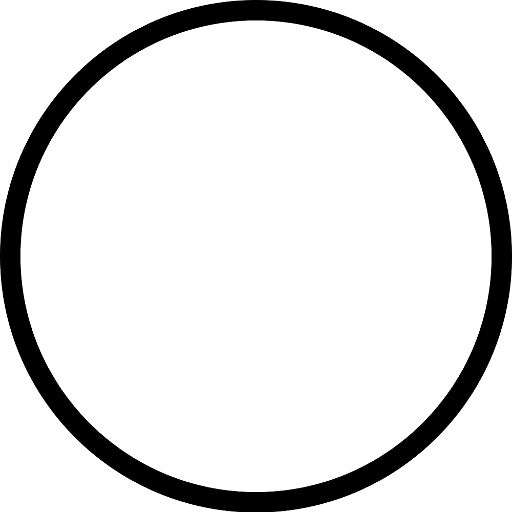
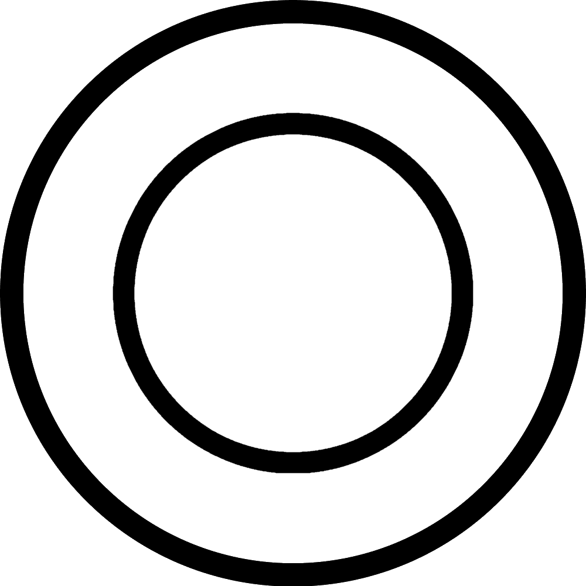

モジュール詳細：リズム正方型
L’ordinateur il s’est éteint.
- モジュールの中央には大きな正方型がある。シークエンスを再生するにはこの正方型を押す。
- それぞれ長さ8の3つのシークエンスが連続して再生される。
- 1つ目は数字で構成されている。
- 2つ目は色で構成されている。
- 3つ目はシンボルで構成されている。
- シークエンスに出現する可能性があるリストは下の図にある。 シークエンスに無いものに注意する。
| 1 | 2 | 3 | 4 | 5 | 6 | 7 | 8 | 9 |
|  |  |
- 除外されているものを上から順に使用し、左から右の位置を使用して数字に変換してから次の手順に進む。